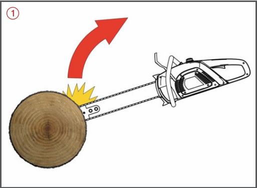

Es kann zu Schnittverletzungen
insbesondere durch einen
Rückschlag der Handkettensäge
und einer Schädigung des
Gehörs kommen.
Bei kraftstoffbetriebenen
Sägen besteht Vergiftungsgefahr durch Abgase.
Beim Arbeitsgang entstehen Hand-Arm-Vibrationen.
Schutzmaßnahmen
Bei Bauarbeiten in der Regel keine Kettensägen verwenden.
Im Rahmen der Gefährdungsbeurteilung
prüfen, ob alternative Maschinen z. B. Handkreissäge, Pendelsäbelsäge,
Elektrischer Fuchsschwanz
eingesetzt werden können.
Betriebsanleitung des Herstellers beachten.
Unterweisung anhand der Betriebsanweisung.
Persönliche Schutzausrüstung
je nach Betriebsanleitung des
Herstellers, Ergebnis der Gefährdungsbeurteilung
und Risikoabschätzung tragen, z. B.
Schnittschutzkleidung,
Schnittschutzschuhe,
Schutzhelm mit Gesichtsschutz,
Gehörschutz,
ggf. Handschuhe mit Schnittschutzeinlage.
Vor Arbeitsbeginn Wirksamkeit
der Kettenbremse prüfen.
Leerlaufdrehzahl so einstellen, dass die Kette beim Starten nicht mitläuft.
Nur scharfe Ketten verwenden. Kettenspannung entsprechend den Herstellerangaben.
Möglichst rückschlagarme
Sägeketten verwenden.
Krallenanschlag verwenden.
Stets für einen festen und sicheren Stand sorgen.
Nicht über Schulterhöhe sägen.
Beim Startvorgang Handkettensäge
sicher abstützen und
festhalten. Die Kette darf dabei
den Boden nicht berühren.
Handkettensäge stets mit
beiden Händen festhalten.
Handkettensäge nur mit laufender
Sägekette aus dem Holz ziehen.

Darauf achten, dass sich keine weiteren Personen im Gefahrbereich aufhalten.
Kettensägen mit Verbrennungsmotoren nicht in geschlossen Räumen, Gruben oder Gräben verwenden.
Nicht mit Schienenspitze sägen. Rückschlaggefahr!
Motor abstellen, bevor die
Säge abgelegt wird.
Bei Transport der Kettensäge
Kettenschutz aufsetzen.
Bei Wartungs- und Instandsetzungsarbeiten Motor abschalten bzw. den Stecker herausziehen.
Arbeitsmedizinische Vorsorge
Arbeitsmedizinische Vorsorge nach Ergebnis der Gefährdungsbeurteilung veranlassen (Pflichtvorsorge) oder anbieten (Angebotsvorsorge). Hierzu Beratung durch den Betriebsarzt.
Beschäftigungsbeschränkungen
Jugendliche unter 15 Jahren dürfen nicht mit Handkettensägen arbeiten.
Jugendliche über 15 Jahren dürfen nur unter Aufsicht eines Fachkundigen und wenn es die Berufsausbildung erfordert, an Handkettensägen arbeiten.